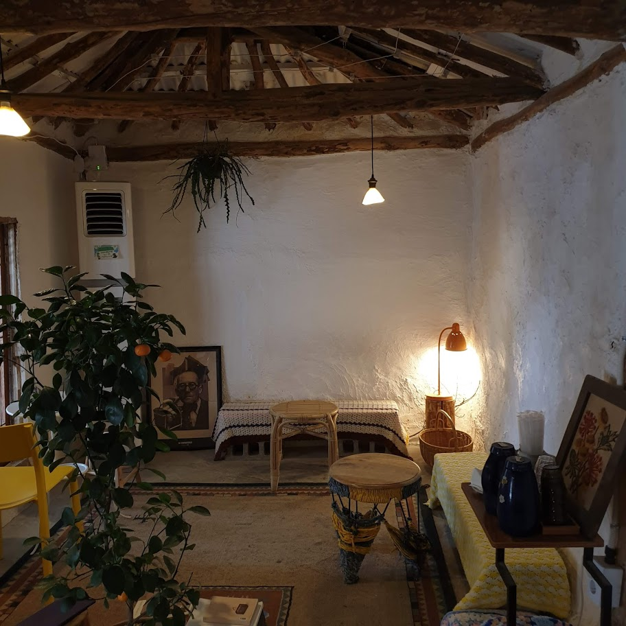
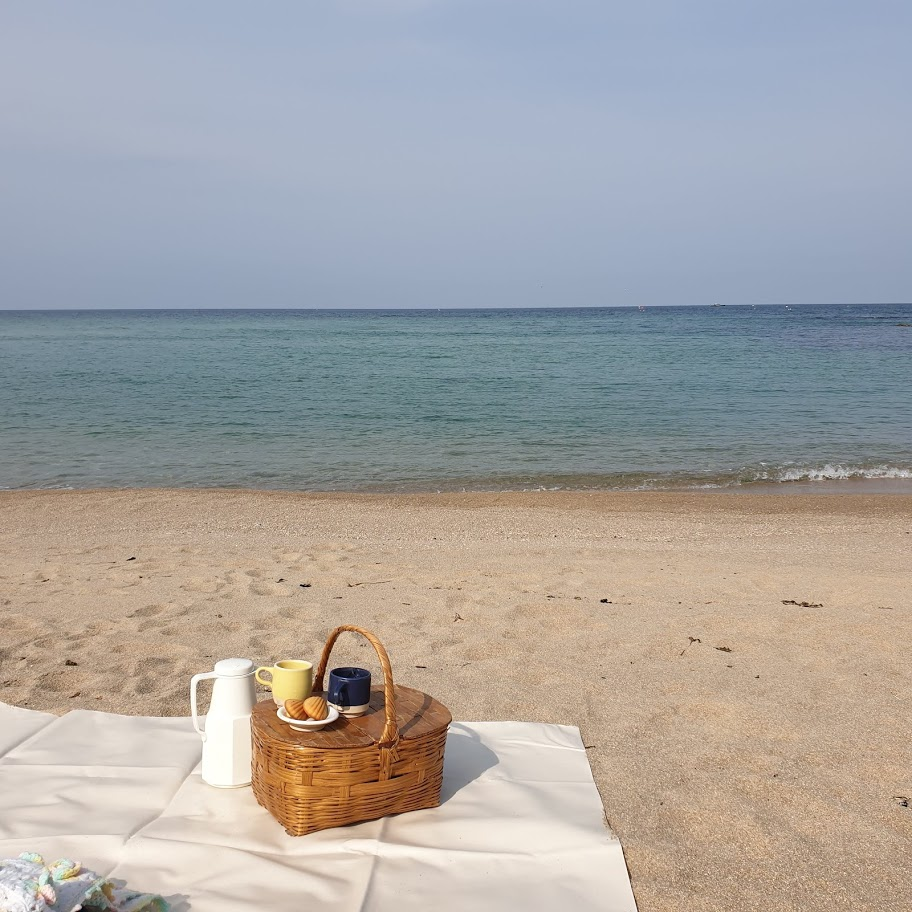

강원도 고성, 한적한 바닷마을의 한 카페에 들렀다.
이런 시골에 분위기 있는 카페가 있는것도 신기했는데 카페에서 들려오는 재즈는 여기가 강원도 고성인지 강남의 어느 재즈바에 와있는지 헷갈리게할 정도로 좋았다.
그리고 사장님이 직접 내려주시는 핸드 드립 커피에서 올라오는 커피향까지, 강원도에서 들러본 카페중에서 가장 마음에드는 카페였다.

카페에서는 피크닉 세트를 주문할 수 있는데, 카페에서 직접 내려준 커피와 커피잔, 마들렌, 돗자리 담요등을 피크닉 바구니에 담아준다. 해변가에 돗자리를 펴고 앉아 따듯한 커피 한 잔 마시면 기분이 몸도 따듯해 지고 기분이 나른해 진다.
커피 한모금에 달달한 마들렌 한 입 그리고 누워서 파도소리를 듣고 있자면 여기가 바로 천국이구나 싶다.
기록 끝.